Capturas reales de Chromium, 20 de octubre de 2026. Datos ficticios en emuladores aislados. Inspección técnica de Codex; aceptación visual y humana pendiente del propietario.
La ficha diferencia configuración y autorización efectiva. El editor conserva revisión, confirmación y motivo; el auxiliar solo incorpora definiciones preaprobadas permitidas por su delegación. El nombre «Borrador cancelado» muestra el ensayo de cancelación sin persistencia.
Viewport 1280 px
Ficha: perfil y permisosEditor: configuración de perfil
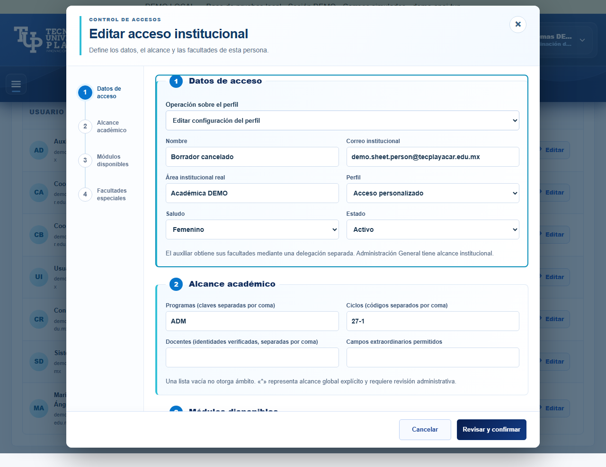
Alcances e historial tras desplazamiento interno
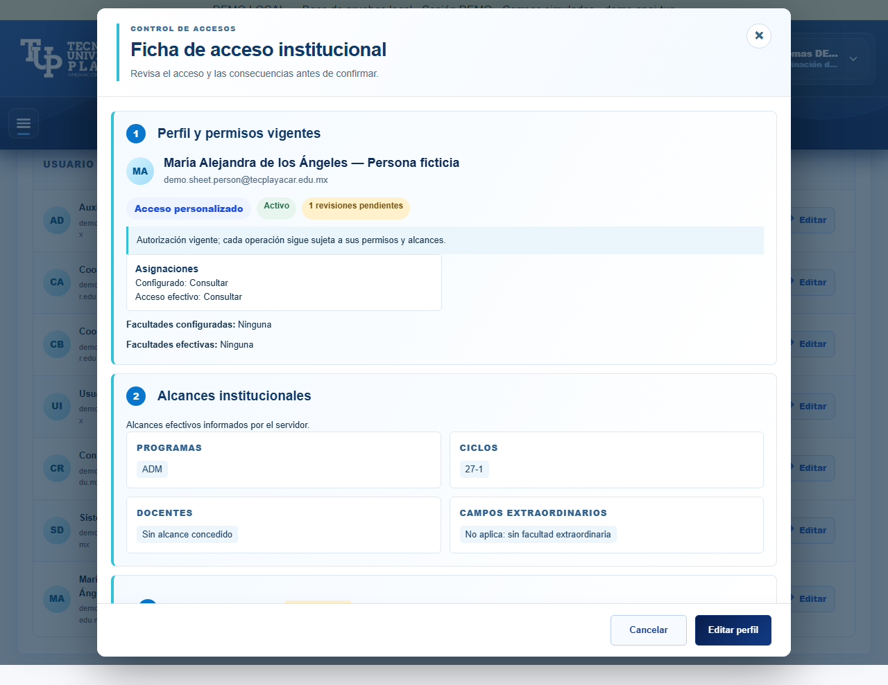
Viewport 768 px
Ficha: perfil y permisosEditor: configuración de perfil
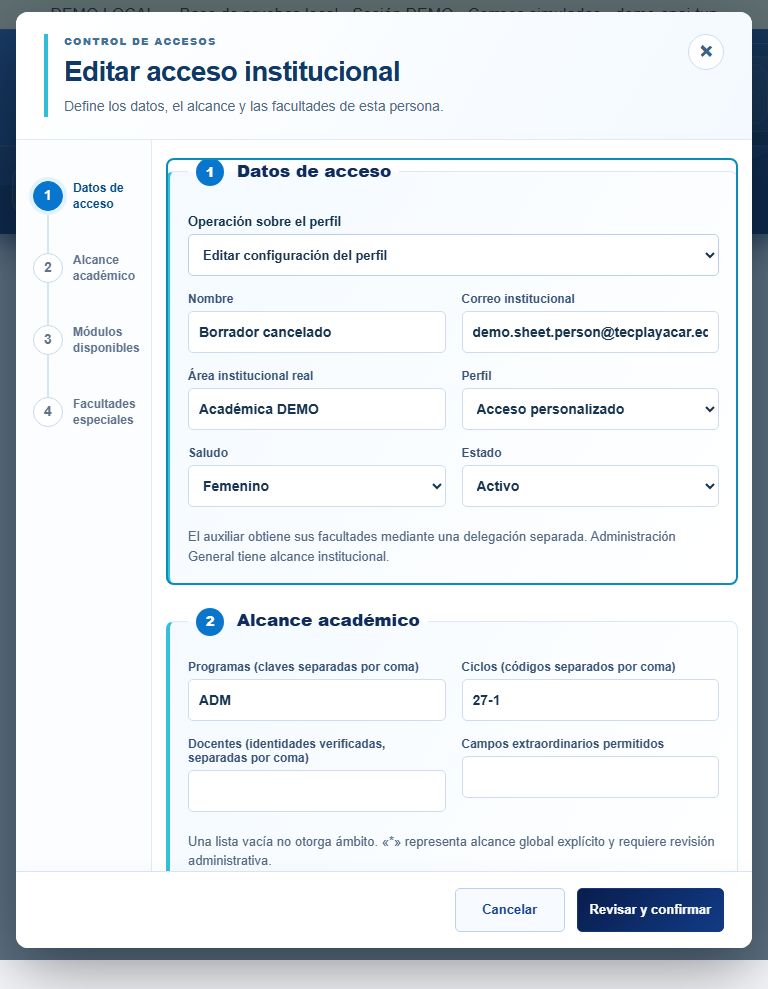
Alcances e historial tras desplazamiento interno
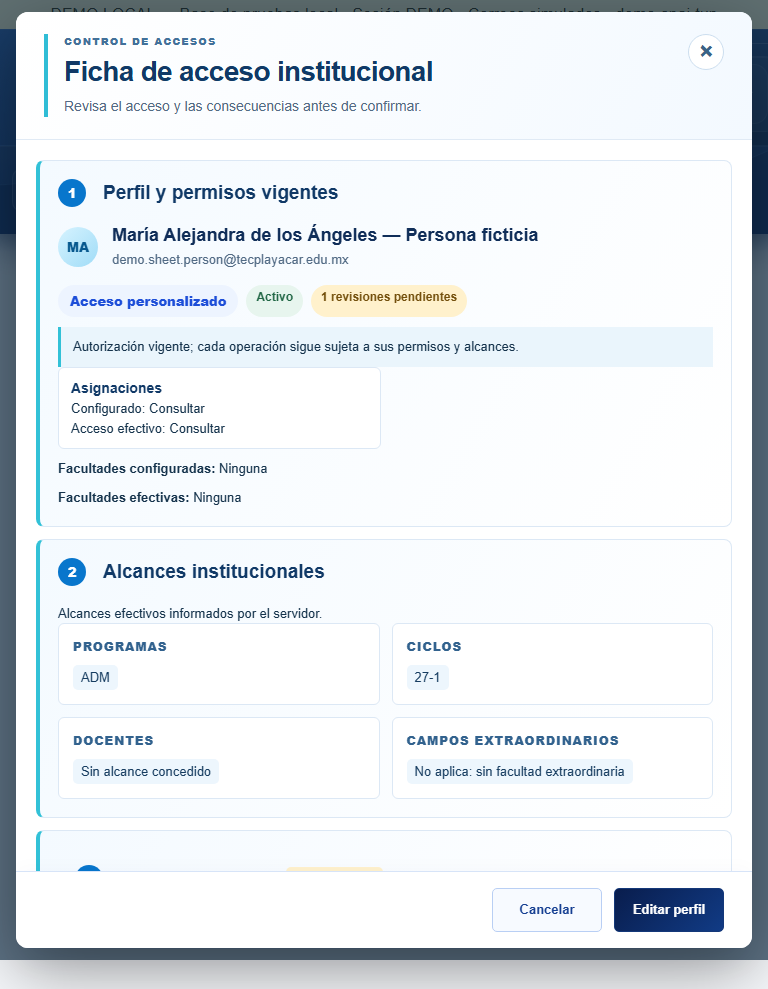
Viewport 390 px
Ficha: perfil y permisos
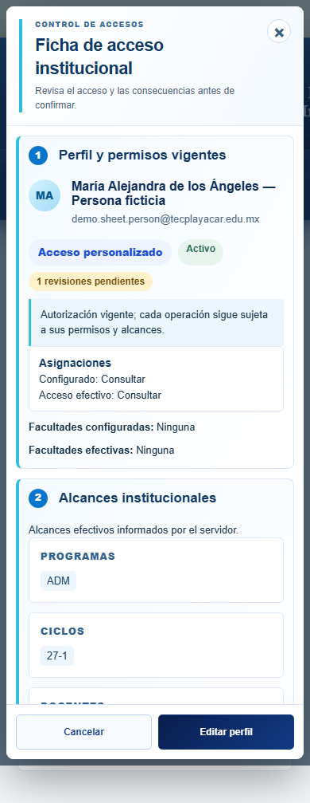
Editor: configuración de perfil
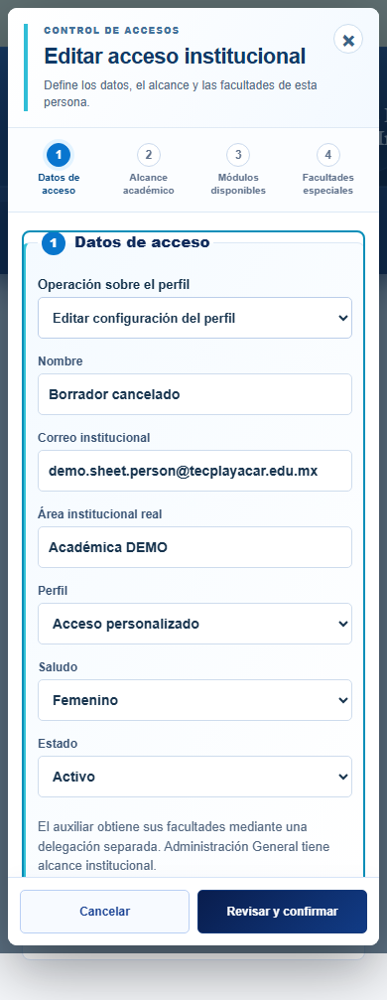
Alcances e historial tras desplazamiento interno
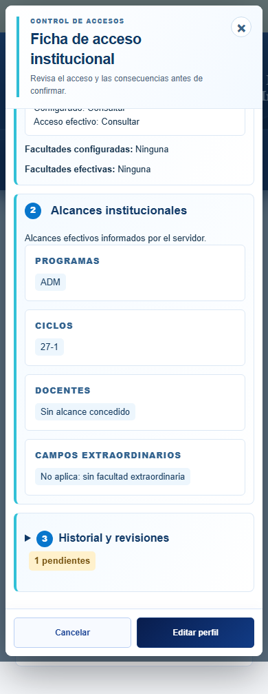
Viewport 320 px
Ficha: perfil y permisos
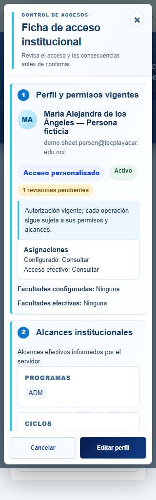
Editor: configuración de perfil
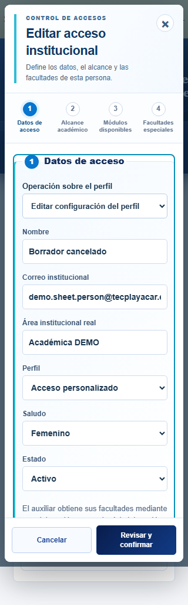
Alcances e historial tras desplazamiento interno
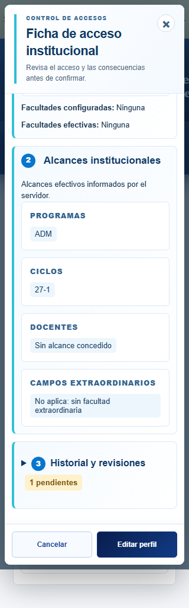
Casos funcionales
Global explícito de Administración General
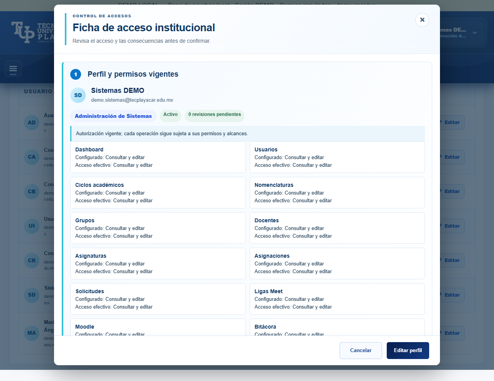
Cuenta inactiva: configuración conservada, acceso no habilitado
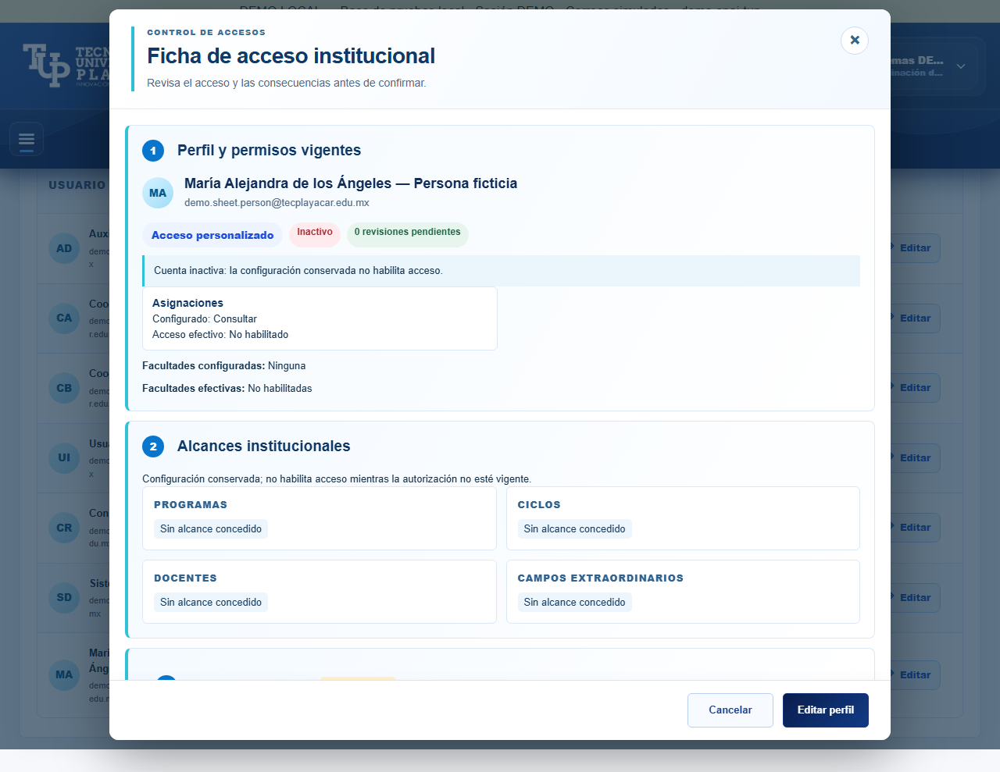
Delegación revocada: configuración y efecto diferenciados